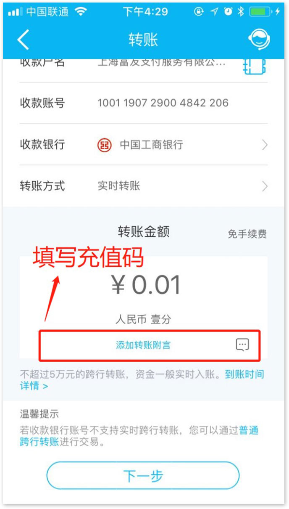

-
☆注意事项：
- 1、请务必使用
本人的银行卡（只限借记卡）进行指定的收款方打款；
- 2、请务必将
充值码（7位数字）准确完整的填入备注栏，如果出现可以填写多种备注、附言、用途、摘要等信息的情况，请全部完整的填写充值码（7位数字）；
- 3、充值码
有效期3天，请您及时足额充值；
- 4、您可以选择的转账方式就是以上三种：
手机银行、网银、柜面（不支持现金）。
转账充值流程
近期，部分银行受政策、规定等因素影响，下调支付限额，导致客户充值受限。基于此，和掌柜与上海富友支付服务股份有限公司合作推出全新充值方式，客户可通过网银、手机银行、柜面（不支持现金）三种途径进行充值，操作便捷，同时享受更高的充值额度。
充值前需要先
生成充值码，然后可在
微信端、PC端操作，进行转账充值，流程如下：
一、点击菜单
“转账充值”，进入充值页面，如下图所示：
二、填写
“注册手机号”和
“充值金额”，点击
“生成充值码”
三、获取收款方信息及7位数字充值码。
四、通过网银、手机银行、柜面（不支持现金）进行充值。以中国建设银行（以下简称“建行”）为例，详细介绍三种不同充值方式的流程如下：
4.1网银充值
1、进入中国建设银行网站首页，选择
“个人网上银行”，点击
“登录”；
2、在
“转账汇款”一栏中，点击
“转账”，如下图：
3、选择付款账户，并准确填写转账信息，根据需要选择转账方式。填写完成后，点击
“下一步”，如下图：
4、若选择“普通转账”、“2小时后转账”及“次日转账”等转账方式时，需要填写“收款账户所属地区”及“收款账户开户网点”，收款账户所属地区选择
“上海”，收款账户开户网点选择
“中国工商银行上海市分行第二营业部”，如下图所示：
5、在
“附言”一栏中，准确完整的填写
7位数字充值码，然后点击
“确认”，完成转账；
4.2手机银行充值
1、登录建行手机银行；
2、点击
“转账”图标，如下图：
3、在弹出的页面中，点击
“转账”，如下图：
4、点击
“付款账户”，如下图：
5、选中付款账户，如下图：
6、输入
“收款户名”和
“收款账号”，如下图：
7、点击
“收款银行”，如下图：
8、在弹出的页面中，选择
“中国工商银行”，如下图：
9、根据需要选择
“转账方式”：实时转账、2小时后到账或次日转账，如下图：
10、输入转账金额，并点击
“添加转账附言”，如下图：

11、准确完整填写
7位数字充值码，如下图：
12、确认所有信息准确无误后，点击
“下一步”，如下图：
13、输入手机收到的验证码，点击
“确认”，完整转账。如下图：
4.3柜面转账充值
1、去中国建设银行营业厅
2、在柜面通过本人卡转账（不支持现金转账），将收款方信息填写无误，且将7位充值码准确填写在单据的附言中
五、充值常见问题及解答
问题1: 充值码如何获取？
答：点击菜单“转账充值”，进入充值页面，填写“注册手机号”→点击“充值”→填写“充值金额”→点击“生成充值码”，即可获取7位数字的充值码。
问题2: 可以使用哪些途径充值？
答：可通过网上银行、手机银行及柜面等三种途径进行转账充值。
问题3: 通过这种方式充值需不需要手续费？
答：不需要手续费。
问题4: 转账充值的到账时间？
答：正常情况下会马上到账，部分银行由于网络等原因可能存在延迟。如果充值后十分钟内未到账，可以立刻跟我们客服人员联系，客服人员会协助您与银行沟通处理。
问题5: 能否使用别人的银行卡进行转账？
答：只能使用本人的银行卡（只限借记卡）进行充值，不支持现金。